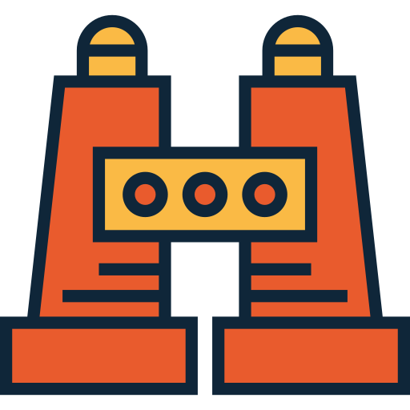

La recherche
Un fablab créé par et pour la recherche scientifique sur le développement durable.

Les low cost
Au fablab on utilise des technologies "low cost", c'est-à-dire des techs à bas coût.
L'innovation technologique
mise au point/ commercialisation d'un produit plus performant dans le but de fournir au consommateur des services objectivement nouveaux ou améliorés.
Le service à la communauté
encourager et accompagner les sociétés à développer une sensibilisation et une compréhension de la responsabilités.
La rehabilitation des materiels
Maintenance, réhabilitation et modernisation de matérie